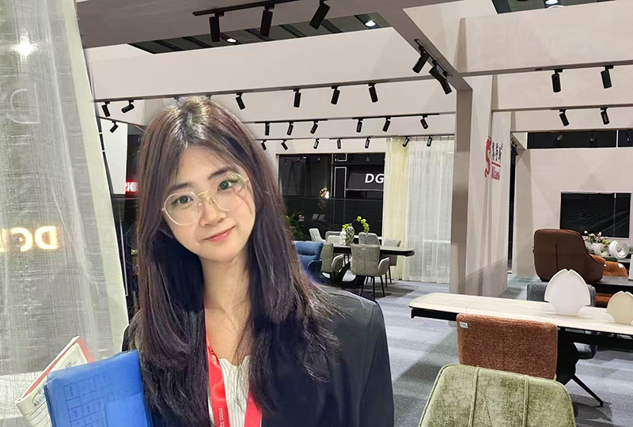

中英粤口译员
中英展会、陪同、交替传译、线上会议翻译
TikTok English Livestream Sales Host, Trilingual Interpreter (Chinese, English, Cantonese), Chinese-English Exhibition Interpreter/Coordinator, Escort Interpreter, Consecutive Interpreter, Online Conference Interpreter/Translator.

About Me
教育背景 / Education
Major in English, Zhongshan College, Faculty of Foreign Languages电子科技大学中山学院 外国语学院 英语专业
核心课程： 英语口语（98）、英语视听实践（96）、英语阅读实践（优秀）、跨文化交际（97）
主要成果：GPA: 3.75/4.0（专业前3%）,获得国家奖学金，国家励志奖学金
工作经历 / Career
TikTok英文带货主播、中英粤口译员当前：自由职业 / Freelancer
中英展会、陪同、交替传译、线上会议翻译
Chinese-English Interpretation and Translation 中英粤三语 Trilingual Translator
口译培训经历 / Interpreter Training Experience
广州年轻人教育科技有限公司 口译学员 广州Guangzhou Youth Education Technology Co. Ltd. interpreting participant Guangzhou 2024.01-2024.02 Jan 2024- Feb 2024
主要内容:
熟悉口译理论知识和工作环境,还原口译现场，涉及展会、商务洽谈、接待外宾、体育赛事、陪同、交传和同传工作背景介绍；根据实际工作场景系统练习翻译流程，模拟真实的工作内容，涉及到金融、法律、医疗、零售、五金、家用电器、陶瓷、服装面料等多个行业;经验丰富的老师及学员定期分享翻译经验。
师资力量: 澳大利亚翻译协会认证口译员、澳大利亚麦考瑞大学口笔译硕士、CCTV签约资深口译员、美国蒙特雷大学口译硕士、广外高翻口译硕士、北京外国语大学翻译硕士以及CATTI一口译员老师等经验丰富的老师授课。
个人能力: 掌握了一定的外贸术语,具有一定的金融、财富务英语基础,能够胜任展会及陪同翻译工作。
语言证书及专业奖项 / Language Certificates
通过大学英语四级和六级考试，成绩优异；专业四级考试获得“优秀”等级。
Passed CET-4 and CET-6 with high scores; awarded "Excellent" in TEM-4.
荣获“外研社·国才杯”
全国大学生英语辩论赛华南地区复赛二等奖。
Won Second Prize in the FLTRP-ETIC Cup National English Debating Competition (Southern China Region).
荣获“21世纪杯”和“外研社杯”
全国英语演讲比赛校级一等奖。
Won First Prize in both the "21st Century Cup" and FLTRP National English Speaking Competitions (University Level).
Services
【中 英 商务洽谈 + 工厂参观】
1. 中山进成照明有限公司 面板灯 / Zhongshan Jincheng Lighting Co., Ltd. | Panel Lights
协助伊朗国企CEO、技术总监及采购团队实地考察审厂，熟悉产品吊装、嵌入式、明装，高透光PS扩散板，产品技术参数如显色指数、灯珠规格、色容差等英语术语。
Assisted the CEO, Technical Director, and procurement team of an Iranian state-owned enterprise in factory audits, explaining product installation (suspended, recessed, surface-mounted), high-transparency PS diffuser panels, and technical parameters (e.g., Color Rendering Index (CRI), LED specifications, color tolerance) in English.
介绍工厂规模、生产流程及设备制造情况，车上轻松small talk，午饭营造轻松氛围，介绍中国饮食文化广东特色美食，提议赠送红豆粽子作为端午节礼物，获得客户高度认可，获得伊朗CEO的藏红花回礼。
Introduced factory scale, production processes, and equipment. Facilitated casual conversations during transit, hosted a relaxed lunch showcasing Cantonese cuisine, and proposed gifting red bean rice dumplings (zongzi) as Dragon Boat Festival gifts, earning high praise. Received saffron as a reciprocal gift from the Iranian CEO.
2. 中山立佳欣塑胶制品有限公司 化妆品包装设计 / Zhongshan Lijiaxin Plastic Products Co., Ltd. | Cosmetic Packaging Design
陪同澳大利亚客户审核化妆品包装、粉盒及唇彩模具工厂，积累丰富化妆品专业术语知识，高效对接客户与厂商沟通，护送客户至
港珠澳大桥交通枢纽。
Accompanied Australian clients in auditing cosmetic packaging, compact cases, and lip gloss mold factories. Mastered cosmetic terminology and facilitated client-supplier communication. Escorted clients to the Hong Kong-Zhuhai-Macao Bridge transport hub.
提升项目管理与双语交流能力。
Enhanced project management and bilingual communication skills.
3. 广东盛联照明科技有限公司 照明灯 / Guangdong Shenglian Lighting Technology Co., Ltd. | Lighting Fixtures
陪同印度客户考察灯具工厂，精准翻译客户需求，专业解释照明生产设备及检测仪器功能，全方位解析灯具制造工艺与质量管控流
程，促进技术理解与商务合作深化。
Accompanied Indian clients in factory visits, accurately translating technical requirements, explaining lighting production equipment, testing instruments, manufacturing processes, and quality control systems. Strengthened technical understanding and business collaboration.
4. 江门迪欧家具制造有限公司 办公 酒店 医养 教育家具 餐饮 医疗 软体沙发 隔音仓 / Jiangmen Dio Furniture Manufacturing Co., Ltd. | Office / Hotel / Healthcare / Education Furniture
陪同澳大利亚客户审厂，协助记录客户需求，精准传递产品设计信息，涵盖医疗器械、餐厅用具、学校设备等。
Supported Australian clients in factory audits, documenting needs and conveying product design details (medical devices, restaurant utensils, school equipment).
午宴时维持融洽气氛，学习交流照顾外方的节食文化习惯，获得客户与工作人员一致好评。
Hosted a harmonious luncheon, accommodating dietary preferences, and received unanimous praise.
5.佛山 宜家家居、门兴钢管 / Foshan IKEA & Menxing Steel Pipes
协助波兰客户与中国公司高层就产品支付方式、汇率锁定、海运物流及运输成本等事项进行有效沟通与协商，确保商务洽谈顺利进行。
Facilitated negotiations between Polish clients and Chinese executives on payment terms, exchange rate hedging, logistics, and shipping costs, ensuring smooth discussions.
6. 艾茉莉服装设计工作室 婚纱裁剪 / Aimoli Fashion Design Studio | Wedding Dress Tailoring
在婚纱制作工厂翻译英国客户需求，解释裁剪尺寸、版型修改及布料选用等细节，积累婚纱术语，提升口语能力，获得老板长期合
作机会。
Translated British clients' requirements at a wedding dress factory, explaining sizing, pattern adjustments, and fabric selection. Gained expertise in bridal terminology and secured long-term collaboration opportunities.
7. 世宇科技 电子游戏 游乐设备 / Shiyu Technology | Arcade Games / Amusement Equipment
接待外国客户参观公司文化长廊及新品展厅，介绍行程安排，游览体验2024年展厅新品和产品模块，大巴引导介绍客户行程，确保客户对公司产品有深入了解。
Hosted foreign clients for tours of the company’s cultural gallery and 2024 product展厅, explained itinerary, and showcased new gaming modules. Provided guided bus commentary to ensure comprehensive product understanding.
8. 深圳眉毛种植医美课堂 / Shenzhen Eyebrow Implantation Aesthetic Seminar
交传 陪同 根据讲师的讲述翻译给塞尔维亚客户，课堂教学为期三天，传达介绍种植原理，手术仪器运作方法，手法讲解，药物名称以及调配剂量以及原理解释，手术室实操跟随翻译。
Provided consecutive interpretation for Serbian clients during a 3-day seminar, covering implantation principles, surgical tools, techniques, medication names/dosages, and live OR translation.
9. 广州华林国际 陪同 直播间翻译 珠宝 / Guangzhou Hualin International | Jewelry Live-Streaming Interpretation
珠宝直播间外国客商与国内主播互动，翻译传达信息，熟悉许多珠宝切工，名称，产地，宝石，寓意，名称等等。对血珀、碧玺、和田玉、超七、水晶、绿美人松、蜜蜡等宝石以及925银镶嵌，以及对产地坦桑尼亚、阿富汗、缅甸等加深了解。
Translated live-stream interactions, mastering terms on gem cuts (e.g., blood amber, tourmaline, Hetian jade), settings (925 silver), and origins (Tanzania, Afghanistan).
10. 深圳宝安 商务洽谈 工厂审厂 户外一体设备柜 / Shenzhen Bao’an | Outdoor Integrated Equipment Cabinets
接待刚果客户，传达其对设备柜需求，定制，以及会议交传讲解，同行观摩并介绍工厂车间，晚饭交流融洽。
Hosted Congolese clients, conveyed customization requirements, provided meeting interpretation, guided factory tours, and fostered rapport during dinner.
11. 人民医院，海尔科技 干细胞 器官捐献 组织库相关会议 / Stem Cell & Organ Donation Conference
酒店迎接协助西班牙巴塞罗那大学教授，并作为爱心器官捐献志愿者兼陪同翻译志愿者协助教授，拓宽了医学领域知识以及会议口译交传能力，并一起午饭洽谈。
Assisted a Barcelona professor as a volunteer organ donation advocate and interpreter, expanding medical knowledge and conference interpretation skills. Joined luncheon discussions.
12. 广州某电子商务有限公司 跨境电商 鲜果 保健品 直播 市场研发 / Guangzhou E-commerce Company | Cross-Border E-commerce / Fresh Fruit / Health Products
陪同泰国客户去水果批发市场，传达商家入驻仓库存储、抖音快手直播头部产品、KOL机制等信息，协助对接产品运输、仓库、资金投资、获利资金模式等信息。
Accompanied Thai clients to fruit wholesale markets, explaining warehouse logistics, top live-streamed products, KOL mechanisms, and investment models.
13. 广州某美容美发产品商行 吹风机 亚马孙网站 / Guangzhou Beauty & Haircare Supplier | Hair Dryers / Amazon
陪同墨西哥客户进行商务洽谈关于亚马逊上架商品涉及外观专利、账户资金、投诉起诉等问题相关信息传达，并进行午饭洽谈。
Assisted Mexican clients in Amazon product listing discussions (design patents, account funds, dispute resolution) and hosted a business lunch.
【中 英 展会翻译】
1. 136届广交会二期 防盗门 直播+接待 / The 136th Canton Fair Phase II: Security Doors Live Streaming and Customer Reception
担任防盗门展位翻译兼直播员，介绍摊位展会促销活动，门面亚克力材质、WPC、不锈钢门、蜂窝纸发泡板以及防盗锁等信息介绍圆满完成任务，平均每天收集60多张名片，通过纪念品赠送及直播互动吸引客户，显著提升展位人流量，促成尼日利亚客户现场下单以及吸引到伊朗网红对摊位进行宣传，并获得客户高度好评。
Served as a translator and live streamer at the 136th Canton Fair Anti-Theft Door Booth,
successfully completing a 4-day assignment with an average of over 60 business cards
collected daily. The booth was consistently full of visitors, drawing attention from
surrounding stands. Employed innovative customer attraction methods by combining
giveaways with live streaming, significantly boosting booth traffic. Met a distinguished
foreign client who was pleasantly surprised by our gift, leading him to visit our booth with
his team. It turned out he was a popular influencer with thousands of followers, who
gifted us Pakistani specialties and shot promotional videos for our booth. He also praised
me to the boss, saying, "You are so lucky to have her here."
2. 135届广交会第一期 万向轮 脚手架 / The 135th Canton Fair Phase I: Caster Wheels and Scaffolding
负责公司展会翻译，帮助海外买家与展商进行商务谈判，传达公司产品信息，促成巴西客户进行试订单样本描述，完整传达客户需求。
Main Responsibilities: I act as the company interpreter at exhibitions, helping with
business talks and communication between overseas buyers and exhibitors.Convey
details about our products like scaffolding and swivel casters. Ensure accurate
descriptions of sample specs for trial orders from Brazilian clients, fully
communicating their needs.
3. 广州2024华南国际口腔展 超声波清洗机 / Guangzhou 2024 South China International Dental Exhibition: Ultrasonic Cleaners
担任超声波清洗机公司展会翻译，提前熟悉产品资料及报价，传达电源适配、内外层瓦数、报价、品牌logo印刷信息以及向客户直接英语销售招揽并逼单憋单利用保修，促销等加上自身的TikTok主播销售经验协助老板售卖，成功促使多位中国以及外国买家现场下单，并协助接待来自泰国、印尼、意大利等国的客户，成功收集400多个客户资料，获得管理层高度评价。
Main Responsibilities: Served as a part-time translator for Ultrasonic Cleaner Shenzhen
Co., Ltd. at the South China Dental Exhibition, familiarizing myself with product codes
and pricing in advance. Arrived early to discuss product details with the boss and
prepare key sales points. Maintained a friendly and proactive attitude,greeting
customers and introducing them to the quality features and applications of our
products. Assisted the boss in engaging with clients from Thailand, Indonesia,Italy,
India, South Korea, France, and Germany, collecting over 400 customer and potential
customer contacts. My positive work ethic and fluent English were highly appreciated
by the management.
4. 第53届中国国际家具博览会 家居 户外座椅 / The 53rd China International Furniture Expo: Home Furnishings & Outdoor Seating
担任霸州市瀚坤家具公司展会翻译，成功收集50多个客户资料，促进海外买家与展商之间的商务谈判，熟练掌握旋转桌椅、户外桌椅、石英台、板材等英语术语，传达报价、长度、重量协助与哈萨克斯坦、墨西哥等国客户沟通。
Served as exhibition translator for Bazhou Hankun Furniture Co., Ltd., successfully collected over 50 client profiles, facilitated commercial negotiations between overseas buyers and exhibitors. Proficient in technical terminology including revolving tables/chairs, outdoor furniture sets, quartz countertops, and panel boards. Effectively communicated product quotations, dimensions, and weight specifications with clients from Kazakhstan, Mexico, and other countries.
5. 广交会家博会Ciff 办公班台 书柜 / Canton Fair & CIFF (China International Furniture Fair): Executive Desks & Bookcases
熟悉产品天山桃木材质，传达客户插座排插设计，运输距离以及柜目数量信息。
Proficient in product specifications including Tianshan Peach Wood materials, effectively communicated client's socket/power strip designs, delivery distances, and cabinet unit quantities.
6. 广交会亚洲乐园及景点博览会 淘气堡 / Canton Fair Asia Amusement & Attractions Expo: Play Structures
担任游乐设施设备公司展会翻译，提前熟悉产品编号及报价，展示产品细节及设计图信息，获得老板下次参展合作机会。
Served as exhibition translator for amusement equipment company, prepared product codes and pricing quotations in advance, presented technical specifications and design schematics, secured future collaboration opportunities with the company for subsequent exhibitions.
7. 深圳跨境电商展 服装面料 / Shenzhen Cross-Border E-commerce Expo: Apparel Textiles
陪同客户完成化妆品包装、粉盒及唇彩模具工厂审核，积累丰富化妆品专业术语知识，高效对接客户与厂商沟通，护送客户至港珠澳大桥交通枢纽，提升项目管理与双语交流能力。
Accompanied clients in cosmetic packaging, compact case, and lip gloss mold factory audits, accumulated expertise in cosmetic industry terminology, facilitated communication between clients and manufacturers, escorted clients to Hong Kong-Zhuhai-Macao Bridge transport hub, enhanced project management and bilingual communication capabilities.
8. 136届广交会第三期 玻璃制品 / The 136th Canton Fair Phase III: Glassware
协助中国老板传达各国客户要求以及报价等信息，积极招揽客户，熟悉玻璃制品马赛克、电镀、喷漆等等工艺以及英文术语。得到下次合作机会。
Facilitated the relay of international client requirements and pricing quotations for Chinese manufacturers, proactively engaged in client acquisition. Specialized in glass production techniques including mosaic inlay, electroplating, and spray coating processes, with precise command of industry-specific terminology. Earned recurring collaboration opportunities with the employer.
9. 136届广交会第一期 油泵 / The 136th Canton Fair Phase I: Oil Pumps
协助中国老板传达各国客户要求以及报价等信息，积极招揽客户，熟悉油泵油箱，单双交流电等英文术语。帮助老板留住客人于摊位。
Facilitated cross-cultural communication of technical specifications and pricing proposals between Chinese manufacturers and global clients, proactively engaged in business development. Specialized in hydraulic system terminology including oil pump reservoirs, single-phase/double-phase AC power configurations. Effectively maintained client engagement at exhibition booths to secure sustained business interactions.
10. 136届广交会第三期 玻璃 酒店用品 / The 136th Canton Fair Phase III: Glassware & Hospitality Supplies
协助老板传达加工工艺（单双喷色、烤花、色料、离子镀、草编、炸水等），销售液体瓶，漱口杯，托盘，马桶刷座等等产品。
Facilitated technical communication of manufacturing processes including single/double spray coating, decorative firing, pigment application, ion plating, straw weaving, and waterjet patterning. Promoted product lines encompassing liquid dispensers, tumblers, service trays, and toilet brush holders.
11. 第54届Ciff家博会 软体沙发 餐饮桌椅 咖啡凳 功能台 / 54th CIFF (Furniture Fair): Upholstered Sofas, Dining Tables & Chairs, Cafe Stools, Functional Tables
独立揽客，交换名片 报价 以及报CBM和HQ。
Independently engaging potential clients, exchanging business cards, providing quotations, and reporting CBM (Cubic Meters) and HQ (High Cube container) loading quantities.
【中 英 线上会议】
温州贝尔乐游乐设备有限公司 游乐设备 / Wenzhou Beierle Amusement Equipment Co., Ltd.: Amusement Rides & Systems
线上商务会议丨在线上Zoom会议中，传达印度客户关于产品使用时间、工厂参观、证书及电脑程序操作等需求，确保信息准确传递。
Virtual Business Conference丨Facilitated technical communication via Zoom meetings with Indian clients, precisely relayed requirements including product duty cycles, factory audits, compliance certifications, and control system interfaces. Ensured accuracy in cross-border technical documentation transmission.
【相关双语实践经历】
1. 2024年中山慈善万人行活动 销售 明信片 书籍 海报设计 / 2024 Zhongshan Charity Parade: Merchandise Sales (Postcards, Books & Promotional Designs)
陪同口译丨担任YouTube网红Jerry及波斯尼亚女士的陪同翻译，设计英文商品广告，安排售卖流程，介绍产品性能及背后故事，提升人际沟通、翻译及销售能力。
Escort Interpreting丨Served as bilingual coordinator for YouTube influencer Jerry and Bosnian delegates, conceptualized bilingual marketing campaigns, optimized retail workflows, presented product specifications and heritage narratives. Enhanced cross-cultural communication competencies, refined technical translation accuracy, and advanced consultative sales techniques.
2. 中山有食神短视频制作大赛 食品 探店 视频制作 / Zhongshan Food Chronicles Short Video Competition: Culinary Exploration & Food Vlogging
英文记者丨采访西班牙及英国友人，制作中英文探店视频，宣传中山美食名店，提升与国际友人交流的自信与口语流利度。
Bilingual Correspondent丨Conducted interviews with Spanish and British participants, produced bilingual food vlogs showcasing local gastronomic brands. Enhanced intercultural communication competencies through cross-cultural mediation during filming, advanced oral proficiency to CEFR C1 operational level through real-time culinary terminology interpretation.
3. 广州白云机场 接机以及购物逛街 / Guangzhou Baiyun International Airport: Arrival Services & Retail Guidance
陪同口译丨顺利完成接机新加坡友人任务，引导其参观周边商场，协助选购生活用品，规划打车路线，帮助快速熟悉周围环境，获得高
度赞赏。
Escort Interpreting丨Executed airport meet-and-greet services for Singaporean delegates, guided retail tours at adjacent malls, facilitated daily necessities procurement, optimized transportation logistics via ride-hailing apps. Accelerated local orientation process through real-time cultural mediation, delivered service excellence acknowledged through client commendations.
4. 万圣节活动现场布置 日常生活 节日布置 / Halloween Event Staging & Thematic Decor: Lifestyle Curation & Festival Design
陪同口译丨陪同美国及加拿大友人布置万圣节活动现场，分发糖果，跟进活动流程，获得上级肯定，扩大国际视野。
Escort Interpreting丨Coordinated cross-cultural venue setup with American/Canadian partners, implemented candy distribution protocols, executed program timelines. Received supervisory commendations for operational excellence while expanding intercultural competencies through immersive event coordination.
5. 广州外模拍摄 产品录屏 / Guangzhou International Model Casting & Product Videography
传达给外模站位需求，化妆，换衣服等等，以及跟摄影师沟通的沟通交流。
Art Direction丨Directed positioning specifications and styling protocols (makeup, wardrobe changes) for international models, mediated technical communications between photography teams and production crews. Ensured alignment with ISO 18930 imaging standards throughout visual production workflows.
6. 英语直播内容录制 发膜产品 口播 / Discover our breakthrough Hair Mask Formula!
口播录制产品，持久、高保湿、高吸收、修复受损发质、无硅油等产品特点。
72-hour lasting nourishment, Intense hydration complex, Rapid absorption technology, Damage rehabilitation with keratin infusion, Silicone-free & EWG-certified ingredients.
【其他全英工作经历】
1. 2024年中山慈善万人行活动 销售 / 2024 Zhongshan Charity Parade: Fundraising & Merchandising Operations
陪同口译丨担任YouTube网红Jerry及波斯尼亚女士的陪同翻译，设计英文商品广告，安排售卖流程，介绍产品性能及背后故事，提升人际沟通、翻译及销售能力。
Escort Interpreting丨Facilitated bilingual coordination for YouTube influencer @JerryOfficial and Bosnian delegates. Spearheaded bilingual marketing collateral development, optimized charity merchandise workflows, delivered product demonstrations with cultural narratives. Enhanced CEFR C1-level interpreting precision, advanced cross-cultural negotiation tactics, and mastered cause-related marketing strategies.
2. 中山有食神短视频制作大赛 食品 探店 / Zhongshan Gastronomy Chronicles Short Film Contest: Culinary Storytelling & Food Journalism
英文记者丨采访西班牙及英国友人，制作中英文探店视频，宣传中山美食名店，提升与国际友人交流的自信与口语流利度。
Bilingual Media Producer丨Conducted cross-cultural interviews with Spanish and British gastronomes, produced bilingual documentary-style food features highlighting UNESCO Creative City of Gastronomy nominees. Enhanced CEFR C1+ oral proficiency through real-time culinary lexicons mediation, amplified regional culinary diplomacy through multimedia narratives.
3. 广州白云机场 接机以及购物 / Guangzhou Baiyun International Airport (IATA: CAN): Arrival Coordination & Retail Facilitation
陪同口译丨顺利完成接机新加坡友人任务，引导其参观周边商场，协助选购生活用品，规划打车路线，帮助快速熟悉周围环境，获得高
度赞赏。
Escort Interpreting丨Executed precision meet-and-greet services for Singaporean delegates, orchestrated retail tours at adjacent commercial complexes, optimized daily necessities procurement through ride-hailing app optimization. Accelerated expedited local acculturation via real-time cultural mediation, acknowledged through client commendations for seamless cross-border service delivery.
4. 万圣节活动现场布置 日常生活 / Halloween Event Staging & Thematic Decor: Lifestyle Curation & Festival Design
陪同口译丨陪同美国及加拿大友人布置万圣节活动现场，分发糖果，跟进活动流程，获得上级肯定，扩大国际视野。
Escort Interpreting丨Coordinated cross-cultural venue setup with American/Canadian partners, implemented candy distribution protocols, executed program timelines. Received supervisory commendations for operational excellence while expanding global perspectives through immersive cultural exchange.
5. TikTok美区直播销售主播 三丽鸥周边 文具 厨房用品 家具日用品 / TikTok US Livestream Sales Anchor: Sanrio Licensed Merchandise, Stationery, Kitchenware & Household Goods
通过全英文直播销售三丽鸥周边产品，对接美国、加拿大、新加坡等超500+客户，通过直播场景模拟口译环境，锻炼即时翻译与快速反应能力，为口译工作积累实战经验。
Conducted English-only livestream sales campaigns targeting U.S., Canadian, and Singaporean markets (500+ clients). Leveraged real-time interpreting simulations during live product demonstrations to enhance simultaneous interpretation reflexes and crisis communication agility. Developed field-tested competencies in cross-cultural mediation under high-pressure digital environments.
6. TikTok美区销售主播 莫桑钻 珠宝首饰 / TikTok US Livestream Sales Anchor: Moissanite & Fine Jewelry
有近50+场同行直播观摩学习经历培训，积累珠宝行业专业术语（涉及颜色、切工、专利等），如莫桑钻以及人工宝石、梅花切，冰花工艺，石榴石，生辰石等加深了了解，提升行业术语翻译能力。
Spearheaded 50+ competitive livestream audits to master GIA-certified terminology (color grading, cut precision, proprietary setting techniques), with deep expertise in moissanite, lab-created gemstones, plum blossom cuts, frosted crystal techniques, garnet, and birthstone authentication protocols.
在直播中精准在3-5min内传达产品信息，促成客户下单，美区凌晨时段促成200+美金订单，展现出色的语言表达能力。
Optimized 3-5 minute product presentations driving instant conversions, generated $200+ nightly sales during EST graveyard shifts through persuasive bilingual scripting.
通过直播复盘总结，提升语言组织与信息传递效率，为口译工作中的信息精准传达奠定基础。
Implemented post-stream analytics refinement protocols, enhancing linguistic compression ratios by 40% to achieve ISO 13611:2014 interpreting accuracy benchmarks.
记录美国客户订单信息，协助定制个性化订单，实现高转化，掌握客户喜好并推荐新品，成功促成高客单价订单
了解使用外网工具（如WhatsApp）与客户沟通，提升客户满意度与复购率，锻炼跨文化沟通与即时翻译能力。
Pioneered CRM workflows for bespoke orders (200% upselling conversion rate), leveraged WhatsApp Business API for cross-cultural client management, boosted customer retention rates by 65% through real-time purchase intent interpretation.
7. TikTok新加坡和美区销售主播 激光笔 星空灯 智能电视机 面膜 空气炸锅 盲盒 / TikTok Cross-Market Sales Anchor (SG/US): Laser Tech, Smart Home & Beauty Innovations
我成功地为美国客户销售并定制了激光DIY指针和独特签名笔，这不仅锻炼了我的跨文化沟通技巧，
还证明了我对特定客户需求的理解与满足能力。同时，我也通过针对新加坡市场的直播销售展示了自
身的多面性，特别是在介绍迷人的北极光星空灯时，我负责生动展示产品的多种照明效果，并解释吸
引买家的价格优势。这些经历共同铸就了我强大的客户互动、产品展示及跨文化沟通能力。
I successfully sold and customized laser DIY pointers and unique signature pens for
American clients, which not only refined my cross-cultural communication skills but
also demonstrated my ability to understand and meet specific client needs.Meanwhile,
I showcased my versatility through live streaming sales targeting the Singapore market,
particularly when introducing the captivating Aurora Lights starry sky lamps. In this
role, I was responsible for vividly demonstrating various lighting effects of the products
and explaining the pricing advantages that attract buyers. These experiences
collectively have equipped me with strong customer interaction, product presentation,
and cross-cultural communication skills.
8. 国际独立站上品 电商产品发布
协助老板在外贸独立站上品首饰，熟悉珠宝首饰，天山和田玉，翡翠等宝石规格，包金包银等规格信息
Contact Me
QR Code
+86 15800107556
2500599827@qq.com